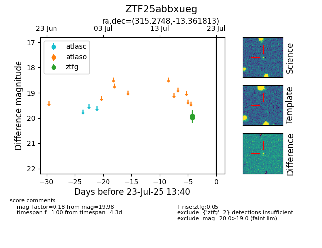

Target ZTF25abbxueg at 2025-08-06 17:27, see:
FINK: fink-portal.org/ZTF25abbxueg
Lasair: lasair-ztf.lsst.ac.uk/objects/ZTF25abbxueg
ALeRCE: alerce.online/object/ZTF25abbxueg
alt names
ZTF25abbxueg (ztf,fink)
coordinates:
equatorial (ra, dec) = (315.2748,-13.36181)
galactic (l, b) = (35.1728,-34.71840)
photometry
last ztfg=19.98
2 ztfg detections
